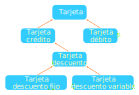

Programación Orientada a Objetos Objetos Python también permite la programación orientada a objetos, que es un paradigma de programación en la que los datos y las operaciones que pueden realizarse con esos datos se agrupan en unidades lógicas llamadas objetos. Los objetos suelen representar conceptos del dominio del programa, como un estudiante, un coche, un teléfono, etc. Los datos que describen las características del objeto se llaman atributos y son la parte estática del objeto, mientras que las operaciones que puede realizar el objeto se llaman métodos y son la parte dinámica del objeto. La programación orientada a objetos permite simplificar la estructura y la lógica de los grandes programas en los que intervienen muchos objetos que interactúan entre si. Ejemplo. Una tarjeta de crédito puede representarse como un objeto: Atributos: Número de la tarjeta, titular, balance, fecha de caducidad, pin, entidad emisora, estado (activa o no), etc. Métodos: Activar, pagar, renovar, anular. Acceso a los atributos y métodos de un objeto dir(objeto): Devuelve una lista con los nombres de los atributos y métodos del objeto objeto. Para ver si un objeto tiene un determinado atributo o método se utiliza la siguiente función: hasattr(objeto, elemento): Devuelve True si elemento es un atributo o un método del objeto objeto y False en caso contrario. Para acceder a los atributos y métodos de un objeto se pone el nombre del objeto seguido del operador punto y el nombre del atributo o el método. objeto.atributo: Accede al atributo atributo del objeto objeto. objeto.método(parámetros): Ejecuta el método método del objeto objeto con los parámetros que se le pasen. En Python los tipos de datos primitivos son también objetos que tienen asociados atributos y métodos. Ejemplo. Las cadenas tienen un método upper que convierte la cadena en mayúsculas. Para aplicar este método a la cadena c se utiliza la instrucción c.upper(). >>> c = 'Python' >>> print(c.upper()) # Llamada al método upper del objeto c (cadena) PYTHON Ejemplo. Las listas tienen un método append que convierte añade un elemento al final de la lista. Para aplicar este método a la lista l se utiliza la instrucción l.append(<elemento>). >>> l = [1, 2, 3] >>> l.append(4) # Llamada al método append del objeto l (lista) >>> print(l) [1, 2, 3, 4] Clases (class) Los objetos con los mismos atributos y métodos se agrupan clases. Las clases definen los atributos y los métodos, y por tanto, la semántica o comportamiento que tienen los objetos que pertenecen a esa clase. Se puede pensar en una clase como en un molde a partir del cuál se pueden crear objetos. Para declarar una clase se utiliza la palabra clave class seguida del nombre de la clase y dos puntos, de acuerdo a la siguiente sintaxis: class <nombre-clase>: <atributos> <métodos> Los atributos se definen igual que las variables mientras que los métodos se definen igual que las funciones. Tanto unos como otros tienen que estar indentados por 4 espacios en el cuerpo de la clase. Ejemplo El siguiente código define la clase Saludo sin atributos ni métodos. La palabra reservada pass indica que la clase está vacía. >>> class Saludo: ... pass # Clase vacía sin atributos ni métodos. >>> print(Saludo) <class '__main__.Saludo'> Es una buena práctica comenzar el nombre de una clase con mayúsculas. Clases primitivas En Python existen clases predefinidas para los tipos de datos primitivos: int: Clase de los números enteros. float: Clase de los números reales. str: Clase de las cadenas de caracteres. list: Clase de las listas. tuple: Clase de las tuplas. dict: Clase de los diccionarios. >>> type(1) <class 'int'> >>> type(1.5) <class 'float'> >>> type('Python') <class 'str'> >>> type([1,2,3]) <class 'list'> >>> type((1,2,3)) <class 'tuple'> >>> type({1:'A', 2:'B'}) <class 'dict'> Instanciación de clases Para crear un objeto de una determinada clase se utiliza el nombre de la clase seguida de los parámetros necesarios para crear el objeto entre paréntesis. clase(parámetros): Crea un objeto de la clase clase inicializado con los parámetros dados. Cuando se crea un objeto de una clase se dice que el objeto es una instancia de la clase. >>> class Saludo: ... pass # Clase vacía sin atributos ni métodos. >>> s = Saludo() # Creación del objeto mediante instanciación de la clase. >>> s <__main__.Saludo object at 0x7fcfc7756be0> # Dirección de memoria donde se crea el objeto >>> type(s) <class '__main__.Saludo'> # Clase del objeto Definición de métodos Los métodos de una clase son las funciones que definen el comportamiento de los objetos de esa clase. Se definen como las funciones con la palabra reservada def. La única diferencia es que su primer parámetro es especial y se denomina self. Este parámetro hace siempre referencia al objeto desde donde se llama el método, de manera que para acceder a los atributos o métodos de una clase en su propia definición se puede utilizar la sintaxis self.atributo o self.método. >>> class Saludo: ... mensaje = "Bienvenido " # Definición de un atributo ... def saludar(self, nombre): # Definición de un método ... print(self.mensaje + nombre) ... return ... >>> s = Saludo() >>> s.saludar('Alf') Bienvenido Alf La razón por la que existe el parámetro self es porque Python traduce la llamada a un método de un objeto objeto.método(parámetros) en la llamada clase.método(objeto, parámetros), es decir, se llama al método definido en la clase del objeto, pasando como primer argumento el propio objeto, que se asocia al parámetro self. El método __init__ En la definición de una clase suele haber un método llamado __init__ que se conoce como inicializador. Este método es un método especial que se llama cada vez que se instancia una clase y sirve para inicializar el objeto que se crea. Este método crea los atributos que deben tener todos los objetos de la clase y por tanto contiene los parámetros necesarios para su creación, pero no devuelve nada. Se invoca cada vez que se instancia un objeto de esa clase. >>> class Tarjeta: ... def __init__(self, id, cantidad = 0): # Inicializador self.id = id # Creación del atributo id ... self.saldo = cantidad # Creación del atributo saldo ... return ... def mostrar_saldo(self): ... print('El saldo es', self.saldo, '€') ... return >>> t = Tarjeta('1111111111', 1000) # Creación de un objeto con argumentos >>> t.muestra_saldo() El saldo es 1000 € Atributos de instancia vs atributos de clase Los atributos que se crean dentro del método __init__ se conocen como atributos del objeto, mientras que los que se crean fuera de él se conocen como atributos de la clase. Mientras que los primeros son propios de cada objeto y por tanto pueden tomar valores distintos, los valores de los atributos de la clase son los mismos para cualquier objeto de la clase. En general, no deben usarse atributos de clase, excepto para almacenar valores constantes. >>> class Circulo: ... pi = 3.14159 # Atributo de clase ... def __init__(self, radio): ... self.radio = radio # Atributo de instancia ... def area(self): ... return Circulo.pi * self.radio ** 2 ... >>> c1 = Circulo(2) >>> c2 = Circulo(3) >>> print(c1.area()) 12.56636 >>> print(c2.area()) 28.27431 >>> print(c1.pi) 3.14159 >>> print(c2.pi) 3.14159 El método __str__ Otro método especial es el método llamado __str__ que se invoca cada vez que se llama a las funciones print o str. Devuelve siempre una cadena que se suele utilizar para dar una descripción informal del objeto. Si no se define en la clase, cada vez que se llama a estas funciones con un objeto de la clase, se muestra por defecto la posición de memoria del objeto. >>> class Tarjeta: ... def __init__(self, numero, cantidad = 0): ... self.numero = numero ... self.saldo = cantidad ... return ... def __str__(self): ... return 'Tarjeta número {} con saldo {:.2f}€'.format(self.numero, str(self.saldo)) >>> t = tarjeta('0123456789', 1000) >>> print(t) Tarjeta número 0123456789 con saldo 1000.00€ Herencia Una de las características más potentes de la programación orientada a objetos es la herencia, que permite definir una especialización de una clase añadiendo nuevos atributos o métodos. La nueva clase se conoce como clase hija y hereda los atributos y métodos de la clase original que se conoce como clase madre. Para crear un clase a partir de otra existente se utiliza la misma sintaxis que para definir una clase, pero poniendo detrás del nombre de la clase entre paréntesis los nombres de las clases madre de las que hereda. Ejemplo. A partir de la clase Tarjeta definida antes podemos crear mediante herencia otra clase Tarjeta_Descuento para representar las tarjetas de crédito que aplican un descuento sobre las compras. >>> class Tarjeta: ... def __init__(self, id, cantidad = 0): ... self.id = id ... self.saldo = cantidad ... return ... def mostrar_saldo(self): # Método de la clase Tarjeta que hereda la clase Tarjeta_descuento ... print('El saldo es', self.saldo, '€.') ... return ... >>> class Tarjeta_descuento(Tarjeta): ... def __init__(self, id, descuento, cantidad = 0): ... self.id = id ... self.descuento = descuento ... self.saldo = cantidad ... return ... def mostrar_descuento(self): # Método exclusivo de la clase Tarjeta_descuento ... print('Descuento de', self.descuento, '% en los pagos.') ... return ... >>> t = Tarjeta_descuento('0123456789', 2, 1000) >>> t.mostrar_saldo() El saldo es 1000 €. >>> t.mostrar_descuento() Descuento de 2 % en los pagos. La principal ventaja de la herencia es que evita la repetición de código y por tanto los programas son más fáciles de mantener. En el ejemplo de la tarjeta de crédito, el método mostrar_saldo solo se define en la clase madre. De esta manera, cualquier cambio que se haga en el cuerpo del método en la clase madre, automáticamente se propaga a las clases hijas. Sin la herencia, este método tendría que replicarse en cada una de las clases hijas y cada vez que se hiciese un cambio en él, habría que replicarlo también en las clases hijas. Jerarquía de clases A partir de una clase derivada mediante herencia se pueden crear nuevas clases hijas aplicando de nuevo la herencia. Ello da lugar a una jerarquía de clases que puede representarse como un árbol donde cada clase hija se representa como una rama que sale de la clase madre.  Debido a la herencia, cualquier objeto creado a partir de una clase es una instancia de la clase, pero también lo es de las clases que son ancestros de esa clase en la jerarquía de clases. El siguiente comando permite averiguar si un objeto es instancia de una clase: isinstance(objeto, clase): Devuelve True si el objeto objeto es una instancia de la clase clase y False en caso contrario. # Asumiendo la definición de las clases Tarjeta y Tarjeta_descuento anteriores. >>> t1 = Tarjeta('1111111111', 0) >>> t2 = t = Tarjeta_descuento('2222222222', 2, 1000) >>> isinstance(t1, Tarjeta) True >>> isinstance(t1, Tarjeta_descuento) False >>> isinstance(t2, Tarjeta_descuento) True >>> isinstance(t2, Tarjeta) True Sobrecarga y polimorfismo Los objetos de una clase hija heredan los atributos y métodos de la clase madre y, por tanto, a priori tienen tienen el mismo comportamiento que los objetos de la clase madre. Pero la clase hija puede definir nuevos atributos o métodos o reescribir los métodos de la clase madre de manera que sus objetos presenten un comportamiento distinto. Esto último se conoce como sobrecarga. De este modo, aunque un objeto de la clase hija y otro de la clase madre pueden tener un mismo método, al invocar ese método sobre el objeto de la clase hija, el comportamiento puede ser distinto a cuando se invoca ese mismo método sobre el objeto de la clase madre. Esto se conoce como polimorfismo y es otra de las características de la programación orientada a objetos. >>> class Tarjeta: ... def __init__(self, id, cantidad = 0): ... self.id = id ... self.saldo = cantidad ... return ... def mostrar_saldo(self): ... print('El saldo es {:.2f}€.'.format(self.saldo)) ... return ... def pagar(self, cantidad): ... self.saldo -= cantidad ... return >>> class Tarjeta_Oro(Tarjeta): ... def __init__(self, id, descuento, cantidad = 0): ... self.id = id ... self.descuento = descuento ... self.saldo = cantidad ... return ... def pagar(self, cantidad): ... self.saldo -= cantidad * (1 - self.descuento / 1...00) >>> t1 = Tarjeta('1111111111', 1000) >>> t2 = Tarjeta_Oro('2222222222', 1, 1000) >>> t1.pagar(100) >>> t1.mostrar_saldo() El saldo es 900.00€. >>> t2.pagar(100) >>> t2.mostrar_saldo() El saldo es 901.00€. Principios de la programación orientada a objetos La programación orientada a objetos se basa en los siguientes principios: Encapsulación: Agrupar datos (atributos) y procedimientos (métodos) en unidades lógicas (objetos) y evitar maninupar los atributos accediendo directamente a ellos, usando, en su lugar, métodos para acceder a ellos. Abstracción: Ocultar al usuario de la clase los detalles de implementación de los métodos. Es decir, el usuario necesita saber qué hace un método y con qué parámetros tiene que invocarlo (interfaz), pero no necesita saber cómo lo hace. Herencia: Evitar la duplicación de código en clases con comportamientos similares, definiendo los métodos comunes en una clase madre y los métodos particulares en clases hijas. Polimorfismo: Redefinir los métodos de la clase madre en las clases hijas cuando se requiera un comportamiento distinto. Así, un mismo método puede realizar operaciones distintas dependiendo del objeto sobre el que se aplique. Resolver un problema siguiendo el paradigma de la programación orientada a objetos requiere un cambio de mentalidad con respecto a como se resuelve utilizando el paradigma de la programación procedimental. La programación orientada a objetos es más un proceso de modelado, donde se identifican las entidades que intervienen en el problema y su comportamiento, y se definen clases que modelizan esas entidades. Por ejemplo, las entidades que intervienen en el pago con una tarjeta de crédito serían la tarjeta, el terminal de venta, la cuenta corriente vinculada a la tarjeta, el banco, etc. Cada una de ellas daría lugar a una clase. Después se crean objetos con los datos concretos del problema y se hace que los objetos interactúen entre sí, a través de sus métodos, para resolver el problema. Cada objeto es responsable de una subtarea y colaboran entre ellos para resolver la tarea principal. Por ejemplo, la terminal de venta accede a los datos de la tarjeta y da la orden al banco para que haga un cargo en la cuenta vinculada a la tarjeta. De esta forma se pueden abordar problemas muy complejos descomponiéndolos en pequeñas tareas que son más fáciles de resolver que el problema principal (¡divide y vencerás!). Anterior Excepciones Siguiente Módulos